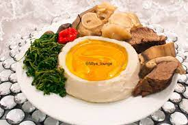

Achu

Description
Achu is the traditional meal of a number of villages in the North West region of Cameroon.
It is the specialty of the Bamenda
or "Bamda" people as I like to say.
It is also widely eaten by the Bamilekes in the western region of the country.
Ingredients
- Palm oil
- Canwa or Nikki" (limestone)
- Fish
- Meat
- Water
- Spices (often Called Achu Spices)
Steps
- You can go to the market and ask to be sold a combination of ingredients for Achu soup
and the seller will put these ingredients together for you.
- Burn the fullow before grinding and you may need to add some water at some point to make the
mixture quite smooth.
- Wash the Canda (cow skin) thoroughly, rinse well and slice. Add it to the boiling meat and let
it boil till ready.
- Add some palm oil and let it boil for a bit.
- Put the pot down then add 'Niki' or limestone to the soup. Melt the limestone in a little water before adding.
You can use 'Niki' without melting.
- Add seasoning to your taste.
- Keep stirring till the soup's colour becomes homogenous and yellow.
- Serve.
Back to home